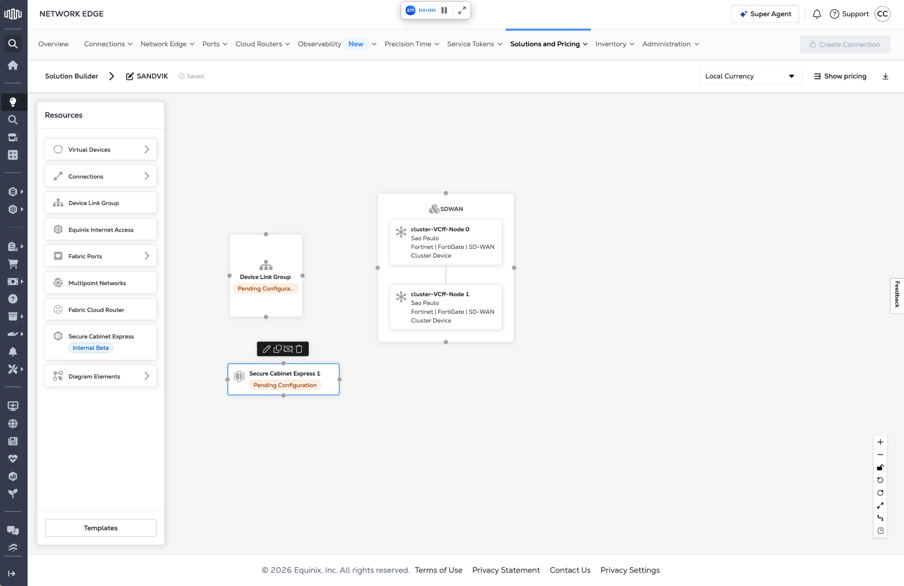
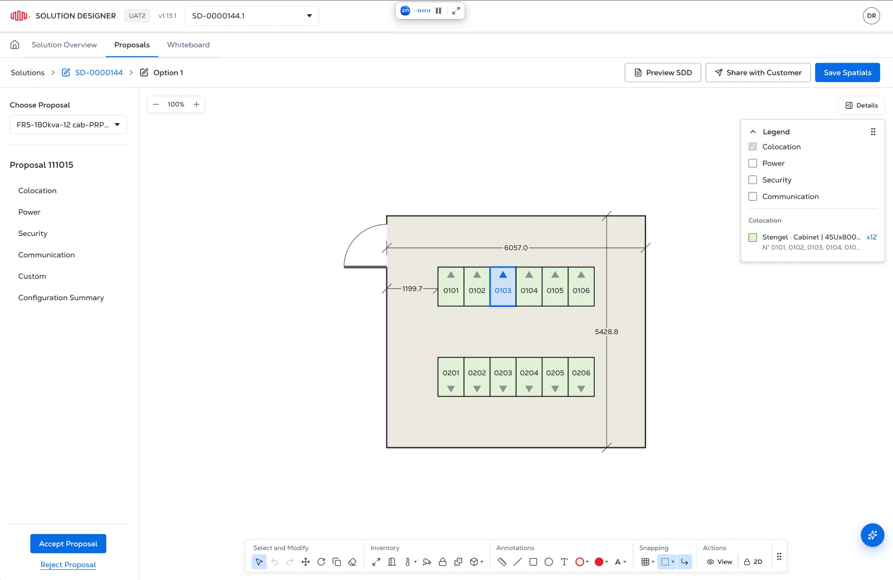
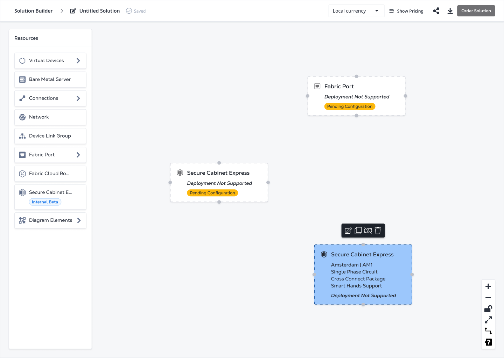
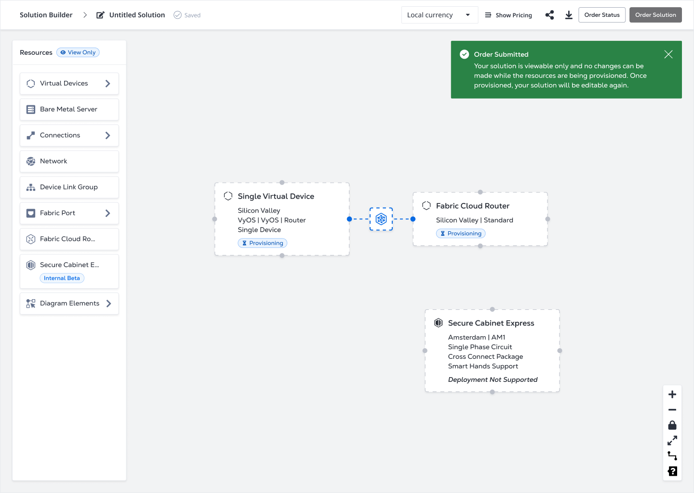
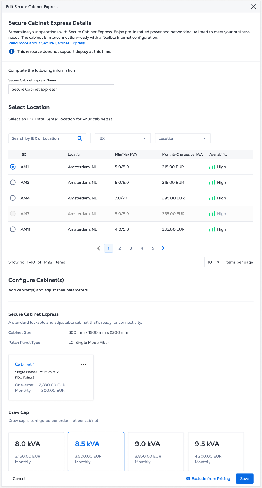
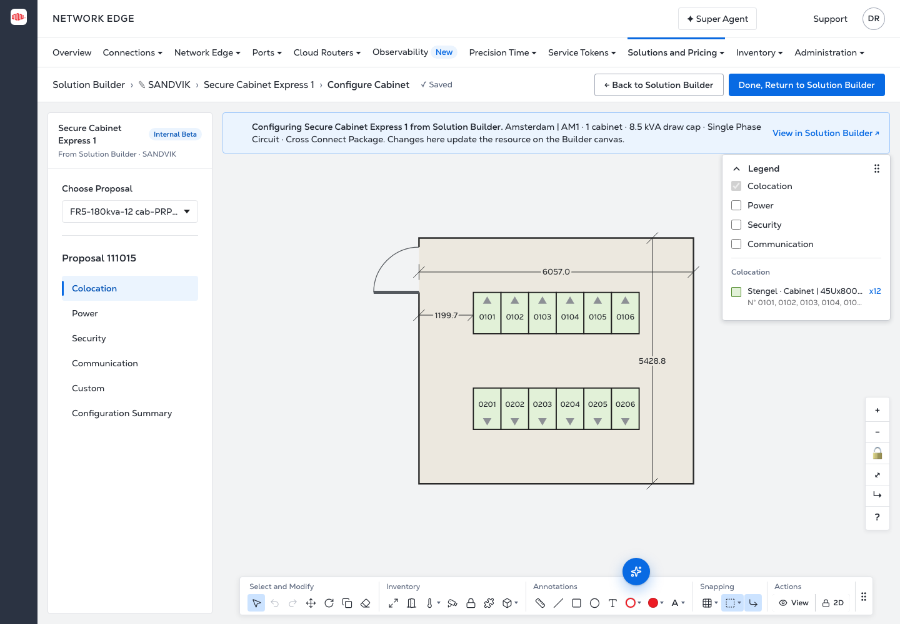

Builder Integration
How Solution Builder (digital connections) and Solution Designer (physical colocation) should hand off to each other when a user configures a cabinet: what Builder does today, what breaks in the jump, and a handoff-mode mock-up of the Proposals page.
Context
Solution Builder (Figma: Click-to-Deploy SB, Q4 2025) handles digital connections: virtual devices, Fabric ports, cloud routers, connections. Solution Designer handles the physical colocation side: cages, cabinets, power, cabling. The two should connect: when a user adds a Secure Cabinet Express or Private Cage on the Builder canvas and chooses to configure it, they land in Solution Designer's Proposals page to design the cabinet, then return to Builder.


1How Solution Builder worksBuilt
- Lives inside the ECP shell. Its bar reads "Solution Builder › Untitled Solution · Saved" with Local currency, Show Pricing, share, download and Order Solution. It autosaves.
- Resource nodes are white cards: dashed border while pending, solid once configured, with summary lines such as "Amsterdam | AM1 · Single Phase Circuit · Cross Connect Package".
- Secure Cabinet Express is edited in a drawer: name, IBX table with availability and monthly charge per kVA, cabinet cards with circuit and PDU pairs and prices, draw cap tiles. It is Internal Beta and "does not support deploy at this time".
- After Order Solution the canvas becomes View Only; nodes show Provisioning, Provisioned or Failed.



2Issues when navigating from Builder to DesignerOpen question
| # | Issue | What differs | Recommendation |
|---|---|---|---|
| 1 | Canvas background | Builder's canvas is grey with white floating panels; Designer's is white with a white side panel. | Use the QUIX fill grey for the canvas; floor plan, legend and toolbar as white floating cards. |
| 2 | Shell and breadcrumb continuity | Designer opens with its own header and module tabs; the user loses the ECP nav and the Builder breadcrumb. | Show Solution Builder › SANDVIK › Secure Cabinet Express 1 › Configure Cabinet with a Back action, inside the ECP shell. |
| 3 | Land in the right place with the right data | The Builder drawer already captures name, IBX, cabinet count and draw cap, the same attributes the Option carries. | Open that cabinet's proposal pre-selected with a context banner carrying the Builder values; no double entry. |
| 4 | Status vocabulary | Builder: Pending Configuration, Ready To Order, Provisioning, Provisioned, Failed, Deployment Not Supported. Designer: In Progress, Shared with Customer, Customer Rejected, Finalized; proposals In Review, Accepted, Rejected. | Agree one mapped state for the node after the round trip, e.g. Configured in Solution Designer; replace Deployment Not Supported with Order via quote once a quote exists. |
| 5 | Save and return semantics | Builder autosaves; Designer has Save Spatials, Accept and Reject Proposal, Share with Customer. | One primary action in handoff mode: Done, Return to Solution Builder, which saves and updates the node. |
| 6 | Pricing source | Builder prices from its catalog and can exclude a node from pricing; Designer prices through Salesforce quotes. | Product decision on which figure the Builder node and Show Pricing use after the handoff. |
| 7 | Terminology | Builder says Secure Cabinet Express; Designer says Private Cage and Proposal. | Carry the Builder resource name into the Designer header and left panel. |
| 8 | Toolbar placement | Builder keeps zoom and fit bottom right; Designer has zoom top left and a wide bottom toolbar. | Keep the drawing toolbar; move zoom and fit to a bottom-right stack. |
| 9 | View Only | After Order Solution the Builder canvas is locked. | Open Designer read-only with the same View Only badge. |
3Proposals page in handoff modeProposed

What the mock does not settle
- The banner values are static; in the build they come from the Builder resource and pre-select the matching proposal.
- The Done action can only update the Builder node correctly once the status mapping and pricing source are agreed.
Open questions for the Builder team
- Which node state does a configured cabinet show after returning from Designer, and what replaces "Deployment Not Supported"?
- Which price appears on the Builder node: the Designer quote or the Builder catalog price?
- Does Designer open inside the ECP shell for the handoff, or as a separate app with a return link?
- Is "Secure Cabinet Express" the customer-facing name Designer should display for the cabinet?